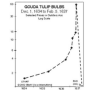

미장에 삼각파도가 덮쳤다. 어떻게 해야할까..

세 줄로 읽기
삼각파도는 방향이 다른 파도가 한 지점에서 만날때 생긴다.
두 파도의 에너지가 한 점에서 겹치니, 훨씬 높고 가파른 물봉우리가 갑자기 솟는다.
일반 파도처럼 옆으로 길게 이어지는 물결이 아니라, 꼭짓점이 뾰족한 피라미드 모양의 물봉우리가 생기는 것이다.
원문 문장에서 고른 요약입니다. 숫자와 사실은 원문에서 다시 확인하세요.
핵심 포인트
- 1큰 파도가 다가오면, 배는 뱃머리를 파도 쪽으로 돌리고 파도를 정면으로 받으려고 노력을 한다.
- 2가장 안전하기때문이다.
- 3삼각파도는 여러 방향에서 동시에 오니, 한쪽 파도를 정면으로 받으면 다른쪽 파도는 옆구리로 맞게 된다.
- 4옆에서 맞는 파도가 배를 뒤집는 주범이다.
이 블로거의 최근 글
- 코어위브는 어떻게 45억달러 대출을 받을 수 있을까?
- 고배당기업 분리과세 첫해, 분리과세보다 무서운 건 건보료
- 주절주절..노관심 PCE...대단한 GDP...돈은 이동중...중국AI 타격
- 대한항공 vs 호반 경영권 전쟁 근황
- 주절주절..이상한 국장...바쁘게 산 젠슨 황...102번째 사이드카
같은 분류의 다른 글
- 김정관 장관 "노동특례, 모든 국민 더 오래 일하자는 것 아냐… 좋은 일자리 지키려는 목적"
- (위) 중국 반도체 지수 과창50, +10.5%
- “지원사업 담당자, 이제 AI가 맡는다”…루모스, 이억원 금융위원장 앞에서 AI 에이전트 시연
- [기고] 솔리다임 상장을 막아서 얻은 것과 잃은 것
- 오아, '오아투엑스'로 사명 변경…AI·물류로봇 사업 본격화
공개 페이지에는 짧은 소개와 원문 링크만 있습니다. 원문 전문은 올리지 않습니다.